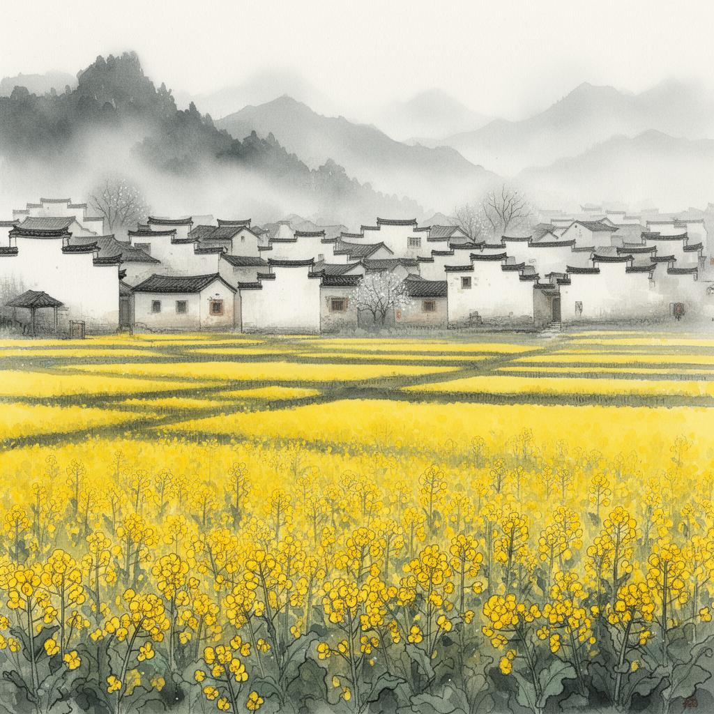
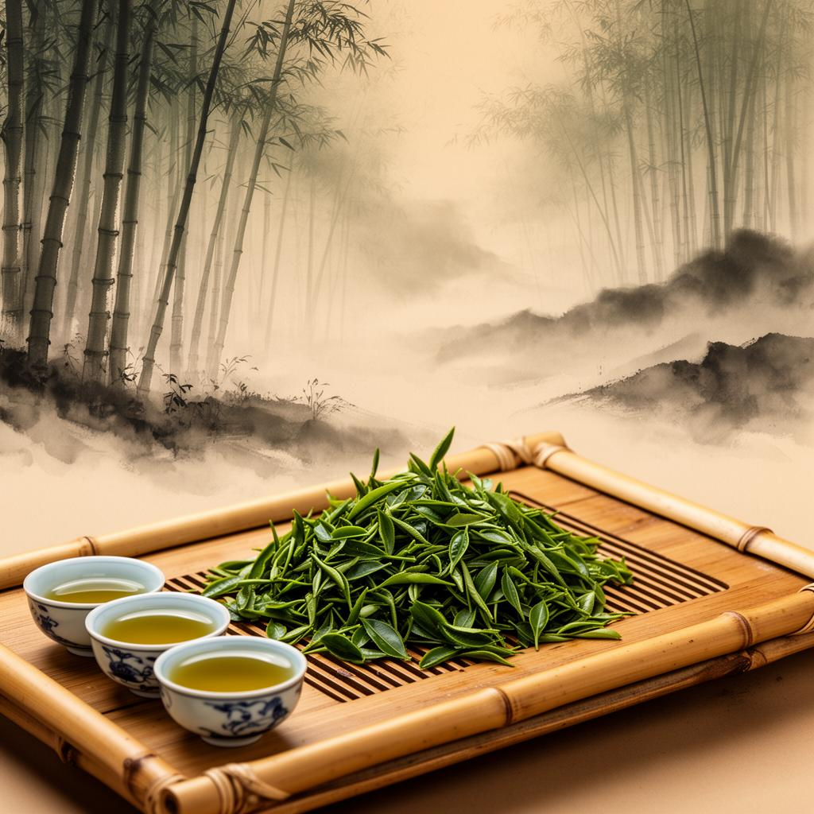

Don't miss it
The Essence of Wuyuan: Must-Visit Places





Jiangxi · China's Most Beautiful Countryside
My life's greatest obsession is that I never dream of visiting
Huizhou.
Step into an ancient village with a history of thousands
of years and encounter a journey through a traditional Chinese ink
painting.
In spring, admire the sea of rapeseed flowers; in summer, appreciate the verdant bamboo groves and clear streams; in autumn, watch the autumn harvest on Huangling Mountain; and in winter, savor the white walls and black tiles of traditional houses.
In March, the rapeseed flowers bloom in abundance, creating a golden sea of blossoms that contrasts beautifully with the white walls and black tiles of the houses, resembling a natural watercolor painting.
March - AprilNestled deep in a bamboo forest, a village nestled amidst a babbling brook, a secluded paradise for escaping the summer heat.
June - AugustA vibrant scene of autumn harvest unfolds, with fiery red peppers and golden chrysanthemums, the joy of a bountiful harvest radiating from the rooftops.
September - NovemberThe white snow covering the gable walls creates a striking contrast of black and white, like an ink wash painting, evoking a sense of tranquility and serenity.
December - February

A half-acre pond opens up like a mirror
— Zhu Xi, a native of Wuyuan
The light of the sky and the shadows of the clouds linger together.
Wuyuan, a land hailed as "China's most beautiful countryside," has nurtured historical figures such as Zhu Xi, the Neo-Confucian philosopher of the Southern Song Dynasty, and Zhan Tianyou, the father of modern railways. A thousand years of cultural heritage and pastoral poetry intertwine here, awaiting your exploration.
Embark on a journey to the hidden gems of ancient villages →Capture the poetic pastoral scenes in traditional Chinese ink paintings with your camera.